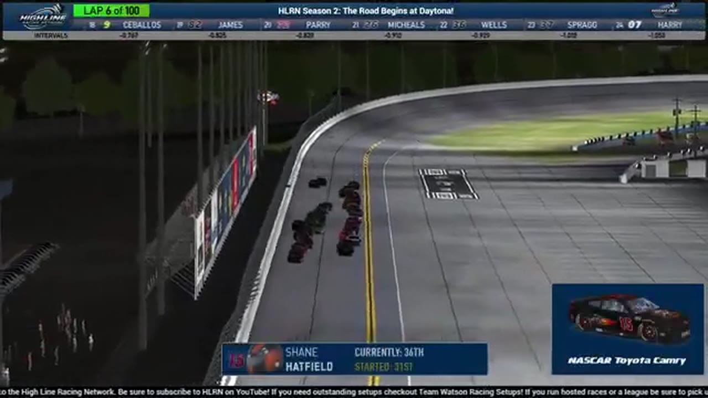

Shane Hatfield
Team assignment not stated in the structured owner record.
AN OFFICIAL-TAPE FOOTPRINT, NOT A RESULTS CLAIM
- Official files
- 4
- Central editions
- 0
- Exact tape cues
- 4
- Accepted podiums
- 0
Shane Hatfield appears in 4 official HLRN broadcast files across Season 2. The current result ledger does not assign this driver a supported top-three finish. A consistently stated team affiliation remains open for owner review. The currently indexed source window runs from June 15, 2026 through July 20, 2026.
The primary chapter index supplies 4 direct jump points. No repeat track fingerprint is yet supported. The densest direct-tape categories are strategy (1 cue) and incident (1 cue). Those counts describe where the name is easiest to find; they are not fault, pace, or performance grades. A source-attributed car frame is published with its original video and timestamp. That is the current discovery map for Shane Hatfield.
Official name signals are used for discovery only. They do not become starts, points, incident counts, or an ability grade. This page is deliberately detailed about the tape and restrained about the unavailable competition record. No Highline Live bonus file is currently attached to this identity. The displayed name is labeled broadcast lower third confirmed; that status remains visible so an owner roster can strengthen or correct the identity without rewriting the evidence trail. Those boundaries define Shane Hatfield's public HLRN file.
4 featured race-tape cues
These are discovery routes into complete HLRN broadcasts, not performance grades or inferred results.
- S2 / R1 · BATTLE
Trevor Haley and Brian Hennings enter Daytona's three-wide late pack
S2 / R1 at 2:25:43: The Daytona pack compresses three wide while Trevor Haley, Brian Hennings, Shane Hatfield, and Evan Perry are named on the call. The chapter keeps the live battle intact and makes no finishing-order claim.
Daytona - S2 / R1 · RESTART
Ryan Wilson launches Daytona's four-lap sprint
Ryan Wilson reaches the Pedley start zone and takes the green with four laps scheduled to remain. Another caution quickly follows with Scott Wise and Shane Hatfield involved, but the window begins as a restart—not a Wilson pit stop.
Daytona - S2 / R1 · STRATEGY
Fuel-only stops split Daytona's caution cycle
Joshua McKenna, Shane Hatfield, Brandon Showers, and Randy Showers are among the drivers taking fuel only. HLRN follows the short-stop choice as the running order reorganizes under caution.
Daytona - S2 / R1 · INCIDENT
Donny Beach heads Daytona's multi-car caution review
The yellow interrupts Trevor Haley's move while Jerry Fassett is back in race control. HLRN identifies Donny Beach, Matthew Graham, and Shane Hatfield among the cars in the replay; Fassett is not assigned to the wreck.
Daytona
Verified team history is not consistently stated. No position-specific top-three result is currently accepted. The public spelling has broadcast identity support; an owner roster can still add legal-name, number, and team-history detail.